산업안전산업기사 (2009-03-01 기출문제)
1과목: 산업안전관리론
1. 산업스트레스의 요인 중 직무특성과 관련된 요인으로 볼 수 없는 것은?
- 조직구조
- 작업속도
- 근무시간
- 업무의 반복성
(정답률: 80%)

2. 다음 중 학습전이(transfer)의 조건이 아닌 것은?
- 학습의 정도
- 시간적 간격
- 학습의 평가
- 학습자와 태도
(정답률: 59%)
3. 다음 중 무재해 운동 추진의 3요소가 아닌 것은?
- 최고 경영자의 경영자세
- 재해 상황 분석 및 해결
- 직장 소집단의 자주활동의 활성화
- 관리 감독자에 의한 안전 보건의 추진
(정답률: 67%)
4. 하인리히(Heinrich)의 재해발생 구성비율에서 중상해가 5건 발생하였다면 무상해사고는 몇 건 발생하겠는가?
- 900건
- 1200건
- 1500건
- 1800건
(정답률: 80%)
5. 인간의 욕구를 5단계로 나누고 위계 이론을 발표한 사람은?
- 허츠버그(Herzberg)
- 하인리히(Heinrich)
- 맥그리거(McGreor)
- 매슬로우(Maslow)
(정답률: 84%)
6. 상시 근로자가 1500명인 사업장에서 1년에 8건의 재해로 인하여 10명의 사상자가 발생하였을 경우 이 사업장의 연천인율은 약 얼마인가?
- 5.33
- 6.67
- 7.43
- 8.28
(정답률: 53%)
7. 안전교육 중 ATP(Administration Training Program)라고도 하며, 당초에는 일부 회사의 최고 관리자에 대해서만 행하여졌던 것이 널리 보급된 것은?
- TWI
- MTP
- CCS
- ATT
(정답률: 49%)
8. 사고방지 대책수립시 Harvey사 제창한 3E의 내용과 가장 거리가 먼 것은?
- 안전교육 및 훈련
- 시설 장비의 개선
- 안전 감독의 철저
- 위험 개소의 발견
(정답률: 57%)
9. 100 ~ 1000명의 근로자가 근무하는 중규모 사업장에 적용되며, 안전업무를 관장하는 전문부분을 두는 안전 조직은?
- line형 조직
- staff형 조직
- 회전형 조직
- line-staff형 조직
(정답률: 71%)
10. 사고 조사를 할 때 사고결과에 대한 원인요소 및 상호의 관계를 인과(因果)관계로 결부하여 나타내는 통계적 원인 분석방법은?
- 관리도
- 특성요인도
- 클로즈분석
- 파레토도
(정답률: 72%)
11. 안전.보건표지에서 사용하는 색의 용도 중에서 파랑 또는 녹색의 보조색으로 사용되는 색체는?
- 빨간색
- 검정색
- 노란색
- 흰색
(정답률: 76%)
12. 다음 중 O.J.T(On the Job Training)의 장점으로 틀린 것은?
- 훈련이 추상적이지 않고 실제적이다.
- 훈련과 업무를 병행할 수 있다.
- 상사나 동료 사이에 이해나 협조정신을 강화할 수 있다.
- 통일된 내용과 동일 수준의 훈련이 될 수 있다.
(정답률: 67%)
13. 강도율이 5.5라 함은 연근로시간 몇 시간 중 재해로 인한 근로손실이 110일 발생하였음을 의미하는가?
- 10000
- 20000
- 50000
- 100000
(정답률: 59%)
14. 알고 있으나 그대로 하지 않은 사람에게 필요한 안전 교육은?
- 태도교육
- 기능교육
- 지식교육
- 실습교육
(정답률: 85%)
15. 재해의 원인 중 직접 원인에 속하는 것은?
- 교육적 원인
- 기술적 원인
- 관리적 원인
- 물적 원인
(정답률: 82%)
16. 다음 [그림]과 같은 착시현상을 무엇이라 하는가?
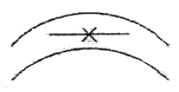
- 동화착오
- 분할착오
- 윤곽착오
- 방향착오
(정답률: 83%)
17. 안전.보건표지의 종류와 기본모형이 잘못 연결된 것은?
- 금지표시-원형
- 경고표지-마름모형
- 지시표지-삼각형
- 안내표지-직사각형
(정답률: 54%)
18. 토의(회의)방식 중 참가자가 다수인 경우에 전원을 토의에 참가시키기 위하여 소집단으로 나누어 진행하는 방식을 무엇이라고 하는가?
- 포럼(forum)
- 버즈세션(buzz session)
- 심포지움(symposium)
- 패널디스커션(panel discussion)
(정답률: 57%)
19. 다음 중 리더의 행동유형측면에서 부하들과 상담하여 부하의 의견을 고려하는 형태의 리더십은?
- 참여적 리더십
- 지원적 리더십
- 지시적 리더십
- 성취 지향적 리더십
(정답률: 78%)
20. 다음 중 암모니아용 정화통 외부 측면의 표시 색으로 옳은 것은?
- 녹색
- 갈색
- 회색
- 노란색
(정답률: 41%)
2과목: 인간공학 및 시스템안전공학
21. 평균수명이 10000시간인 지수분포를 따르는 요소 10개가 직렬계로 구성되어 있는 경우 계의 기대 수명은?
- 1000시간
- 5000시간
- 10000시간
- 100000시간
(정답률: 52%)
22. 다음 중 path set에 관한 설명으로 옳은 것은?
- 시스템의 위험성을 표시한다.
- FT도에서 Top 사상을 일으키기 위한 필요 최소한의 조합이다.
- 시스템이 고장나지 않도록 하는 사상의 조합이다.
- 일반적으로 Fussell Algorithm을 이용하여 구한다.
(정답률: 69%)
23. 시스템 신뢰도를 증가시킬 수 있는 방법이 아닌 것은?
- 페일 세이프(fail safe) 설계
- 풀 프로프(fool proof) 설계
- 중복 (redundancy) 설계
- 록 시스템(lock system) 설계
(정답률: 55%)
24. 일반적으로 의자설계의 원칙에서 고려해야 할 사항과 가장 거리가 먼 것은?
- 체중분포에 관한 사항
- 의자 좌판의 높이에 관한 사항
- 개인차의 반영에 관한 사항
- 상반신의 안정에 관한 사항
(정답률: 75%)
25. 다음 중 체계(system)의 특성으로 볼 수 없는 것은?
- 집합성
- 관련성
- 목적추구성
- 환경독립성
(정답률: 80%)
26. 다음 내용에 해당하는 양립성의 종류는? [자동차를 운전하는 과정에서 우측으로 회전하기 위하여 핸들을 우측으로 돌린다.]
- 개념의 양립성
- 운동의 양립성
- 공간의 양립성
- 감성의 양립성
(정답률: 75%)
27. 급작스런 큰 소음으로 인하여 생기는 생리적 변화가 아닌 것은?
- 근육이완
- 혈압상승
- 동공팽창
- 심장박동수 증가
(정답률: 76%)
28. FT에서 사용되는 논리 기호와 명칭이 맞지 않는 것은?
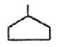
: 통합사상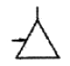
: 전이기호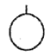
: 기본사상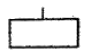
: 이하 생략의 결함사상
(정답률: 58%)
29. 다음 중 사후보전에 필요한 수리시간의 평균치를 나타낸 것은?
- MTTF
- MTBF
- MDT
- MTTR
(정답률: 65%)
30. 기계와 인간의 상대적 수행도를 나타내는 다음[그림]에서 시스템의 재설계가 요구되는 영역은?
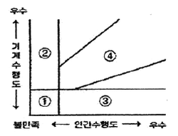
- ①
- ②
- ③
- ④
(정답률: 70%)
31. 다음 중 인간 과오의 분류시스템과 그 확률을 계산함으로써 원래 제품의 결함을 감소시키기 위하여 개발된 기법은?
- THERP
- FMEA
- FHA
- MORT
(정답률: 73%)
32. 다음 중 소음에 의한 청력손실이 가장 크게 나타나는 주파수는?
- 500㎐
- 1000㎐
- 2000㎐
- 4000㎐
(정답률: 73%)
33. 통로나 그네의 줄 등을 설계하는데 있어 가장 적합한 인체측정자료의 응용원칙은?
- 평균치 설계
- 최대 집단치 설계
- 최소 집단치 설계
- 가변적(조절식)설계
(정답률: 59%)
34. 시각적 부호 중 교통표지판, 안전보건 표지 등과 같이 부호가 이미 고안되어 있으므로 이를 배워야 하는 부호를 무엇이라 하는가?
- 추상적 부호
- 묘사적 부호
- 임의적 부호
- 상태적 부호
(정답률: 44%)
35. 다음 FT도에서 사상 A 의 발생 확률은? (단, 사상 B1의 발생확률은 0.3이고, B2의 발생확률은 0.2 이다.)
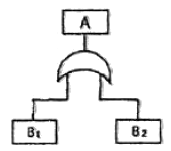
- 0.06
- 0.44
- 0.56
- 0.94
(정답률: 66%)
36. 시스템의 수명곡선에서 고장의 발생형태가 일정하게 나타나는 기간은?
- 초기고장기간
- 우발고장기간
- 마모고장기간
- 피로고장기간
(정답률: 67%)
37. 시각적 표시장치에서 지침의 일반적인 설계 방법으로 적절하지 않은 것은?
- 뾰족한 지침을 사용한다.
- 지침의 끝은 작은 눈금과 겹치도록 한다.
- 지침을 눈금면에 밀착시킨다.
- 원형 눈금의 경우 지침의 색은 선단에서 눈금의 중심까지 칠한다.
(정답률: 61%)
38. 화학설비에 대한 안전성 평가시 “정량적 평가”의 5항목에 해당하지 않는 것은?
- 취급물질
- 화학설비용량
- 온도
- 전원
(정답률: 74%)
39. [보기]와 같은 화학설비에 대한 안전성 평가 항목을 순서대로 나열한 것은?
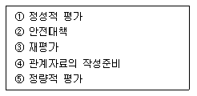
- ④→②→⑤→①→③
- ④→⑤→①→②→③
- ④→①→⑤→②→③
- ④→②→①→⑤→③
(정답률: 67%)
40. 사물을 볼 수 있는 최소각이 30초인 사람과 최소각이 1분인 사람의 산술적 시력 차이는 얼마인가?
- 0.5
- 1.0
- 1.5
- 2.0
(정답률: 43%)
3과목: 기계위험방지기술
41. 보일러수 중에 유지류, 용해, 고형물, 부유물 등에 의해 보일러 수면에 거품이 발생하여 수위가 불안정하게 되고 심하면 보일러 밖으로 흘러넘치게 되는 현상은?
- 플라이밍
- 포밍
- 캐리오버
- 워터해머
(정답률: 80%)
42. 동력식 수동대폐기계의 덮개 하단과 송급측 테이블면과의 간격은 몇 mm 이하이어야 하나?
- 3mm
- 5mm
- 8mm
- 12mm
(정답률: 41%)
43. 로울러의 위험점 전방에 개구간격 16.5mm의 가드를 설치하고자 한다면, 개구부에서 위험점까지의 거리는 몇 mm 이상이어야 하는가?
- 60mm
- 70mm
- 80mm
- 90mm
(정답률: 57%)
44. 목재 가공용 둥근톱 기계의 장호장치에 관한 설명이다( )에 들어갈 내용으로 옳은 것은?
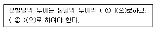
- ① : 1.5배 이상 ② : 치진폭 이하
- ① : 1.1 이상 ② : 치진폭 이하
- ① : 1.5배 이하 ② : 치진폭 이상
- ① : 1.1배 이하 ② : 치진폭 이상
(정답률: 70%)
45. 프레스의 방호장치에 해당되지 않는 것은?
- 손쳐내기(sweep guard)식 방호장치
- 수인(pull out)식 방호장치
- 가드(guard)식 방호장치
- 롤 피드(roll feed)식 방호장치
(정답률: 75%)
46. 지게차의 안전장치에 해당하지 않는 것은?
- 백미러
- 후방접근 경보장치
- 백 레스트
- 권과방지장치
(정답률: 77%)
47. 산업안전기준에 관한 규칙에 따르면 차량계 하역운반기계를 이용한 화물 적재시의 준수해야 할 기준으로 틀린 것은?
- 최대적재량의 10% 이상 초과하지 않도록 적재한다.
- 운전자의 시야를 가리지 않도록 적재한다.
- 붕괴, 낙하 방지를 위해 화물에 로프를 거는 등 필요조치를 한다.
- 편하중이 생기지 않도록 적재한다.
(정답률: 82%)
48. 양중기의 와이어로프 또는 달기체인의 안전계수는 얼마 이상이어야 하는가? (단, 화물의 하중을 직접 지지하는 경우)
- 7
- 5
- 3
- 1
(정답률: 80%)
49. 로울러기의 급정지장치는 무부하에서 최대속도로 회전시킨 상태에서 규정된 정지거리 이내에 당해 로울러를 정지시킬 수 있어야 한다. 앞면 로울러의 직경이 30㎝, 원주속도가 20m/min 이라면 급정지거리는 얼마 이내이어야 하는가?
- 앞면 로울러 원주의 1/4
- 앞면 로울러 원주의 1/3
- 앞면 로울러 원주의 1/2.5
- 앞면 로울러 원주의 1/2
(정답률: 62%)
50. 그림과 같이 2개의 슬링 와이어로프로 무게 1000N의 화물을 인양하고 있다. 로프 TAB에 발생하는 장력의 크기는 약 몇 N 인가?
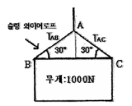
- 500 N
- 707 N
- 1000 N
- 1414 N
(정답률: 53%)
51. 크레인에 설치하는 방호장치의 종류가 아닌 것은?
- 과부하 방지 장치
- 권과 방지 장치
- 브레이크 해지 장치
- 비상정지 장치
(정답률: 65%)
52. 프레스의 감응식(광전자식) 방호장치의 설치 기준으로 틀린 것은?
- 투광기 및 수광기의 광축의 수는 2 이상으로 할 것.
- 광축 상호간의 간격은 150mm 이하로 할 것.
- 전길이에 걸쳐 유효하게 작동할 것.
- 투광기에서 발생하는 빛 이외의 광선에 감응하지 않을 것.
(정답률: 55%)
53. 탁상용 연삭기에서 연삭 숯돌과 작업대와의 간격은 몇 mm 이하로 조정할 수있는 작업대를 갖추고 있어야 하나?
- 10mm 이하
- 6mm 이하
- 5mm 이하
- 3mm 이하
(정답률: 59%)
54. 산업용 로봇의 재해 발생에 대한 주된 원인이며, 본체의 외부에 조립되어 인간의 팔에 해당하는 기능을 하는 것은?
- 제동장치
- 외부전선
- 매니플레이터
- 배관
(정답률: 82%)
55. 기계설비의 안전조건 중 외관의 안전화에 해당하는 조치는?
- 고장발생을 최소화 하기 위해 정기점검을 실시한다.
- 접압강하, 정전시의 오동작을 방지하기 위하여 제어장치를 설치하였다.
- 기계의 예리한 돌출부 등에 안전 덮개를 설치하였다.
- 강도를 고려하여 안전율을 초대로 고려하여 설계하였다.
(정답률: 79%)
56. 연삭기의 원주속도 V[m/s]를 구하는 식은? (단, D는 숫돌의 지름(m), n은 회전수(rpm)이다.)
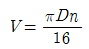
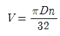
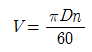
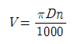
(정답률: 61%)
57. 다음 ( ) 안에 들어갈 말로 옳은 것은?
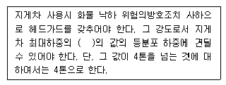
- 1배
- 2배
- 3배
- 4배
(정답률: 77%)
58. 지게차 안정도에서 주행시의 전후 안정도 기준은 몇%이내이어야 하나? (단, 기준은 무부하 상태이다.)
- 3.5%
- 4%
- 6%
- 18%
(정답률: 54%)
59. 보일러의 과열을 방지하기 위하여 최고사용압력과 사용압력 사이에서 보일러의 버너연소를 차단할 수 있도록 부착하여야 하는가?
- 압력방출장치
- 압력제한 스위치
- 화염검출기
- 고저 수위조정장치
(정답률: 66%)
60. 인력운반 작업시 안전수칙 중 잘못된 것은?
- 물건을 들어 올릴 때는 팔과 무릎을 사용하고 허리를 구부린다.
- 운반 대상물의 특성에 따라 필요한 보호구를 확인 착용한다.
- 화물에 가능한 한 접근하여 화물의 무게중심을 몸에 가까이 밀착시킨다.
- 무거운 물건은 공동 작업으로 하고 보조기구를 이용한다.
(정답률: 80%)
4과목: 전기 및 화학설비위험방지기술
61. 다음 중 유해물질에 대한 노출기준의 정의에서 근로자가 1일 작업시간 동안 잠시라도 노출되어서는 아니 되는 기준은?
- STEL
- TWA
- Ceiling
- Lc50
(정답률: 48%)
62. 다음 중 폭발범위가 가장 넓은 것은?
- 부탄
- 메탄
- 프로판
- 아세틸렌
(정답률: 74%)
63. 가스폭발위험장소 중 1종 장소에 해당하는 것은?
- 인화성 액체의 증기 또는 가연성 가스에 이한 폭발위험이 지속적으로 또는 장기간 존재하는 장소
- 정상작동상태에서 인화성 액체의 증기 또는 가연성 가스에 의한 폭발위험 분위기가 존재하기 쉬운 장소
- 분진은 형태의 가연성 분진이 폭발농도를 형성할 정도로 충분한 양이 정상작동 중에 연속적으로 또는 자주 존재하는 장소
- 정상작동 상태에서 인화성 액체의 증기 또는 가연성 가스에 의한 폭발위험 분위기가 존재할 경우 그 빈도가 아주 적고 단기간만 존재할 수 있는 장소
(정답률: 57%)
64. 특수화학설비란 섭씨 몇 ℃ 이상인 상태에서 운전되는 설비를 말하는가?
- 150℃
- 250℃
- 350℃
- 450℃
(정답률: 58%)
65. 전선로에 근접한 일반작업시 전선로의 이설이나 충전 전로의 정전이 곤란할 경우의 조치사항으로 적절하지 않은 것은?
- 감시인을 배치하여 접근을 통제한다.
- 근접한 충전부분에 방호구를 설치한다.
- 감전위험 방지를 위한 방호망을 설치한다.
- 근로자에게 활선작업 방법에 대한 교육을 실시한다.
(정답률: 62%)
66. 과전류차단기로 시설하는 퓨즈 중 고압전로에 사용하는 포장 퓨즈는 정격전류에 대하여 몇 배의 전류에 견딜 수 있어야 하는가?
- 1.1배
- 1.3배
- 1.6배
- 2.0배
(정답률: 56%)
67. 다음 중 폭발하한계에 대한 설명으로 틀린 것은?
- 일반적으로 폭발한계 범위는 온도 상승에 의하여 넓어지게 된다.
- 공기 중 폭발하한계는 온도가 100℃ 증가함에 따라 약 8%씩 증가한다.
- 일반적으로 압력이 상승되면 폭발상한계도 증가한다.
- 산소 중에서의 폭발하한계는 공기 중에서와 같다.
(정답률: 41%)
68. 폭발을 분류할 때 원인물질의 물리적 상태에 따라 기상폭발과 응상폭발로 구분하는데 다음 중 응상폭발을 하는 물질이 아닌 것은?
- TNT
- 면화약
- 아세틸렌
- 다이너마이트
(정답률: 65%)
69. 다음 중 정전기의 대전현상이 아닌 것은?
- 마찰대전
- 충돌대전
- 파괴대전
- 망상대전
(정답률: 74%)
70. 혼합가스 용기에 전체압력이 10기압, 0℃에서 몰비로 수소 30%, 산소 20%, 질소 50%가 채워져 있을 때, 수소가 차지하는 부피는 몇 L 인가? (단, 표준상태는 0℃, 1기압이다.)
- 0.448
- 0.672
- 1.12
- 2.24
(정답률: 48%)
71. 다음 중 전기설비 화재의 소화에 가장 적합한 것은?
- 건조사
- 포 소화기
- CO2소화기
- 봉상강화액 소화기
(정답률: 73%)
72. 다음 중 정전기로 인하여 재해가 발생되는 경우가 아닌 것은?
- 도체 부분에 접지를 한 상태일 때
- 가연성 가스 및 증기가 폭발한계 내에 있을 때
- 배관내의 액체 위험물을 1m/s 이상의 유속으로 이송 할 때
- 정전기의 방전에너지가 가스 및 증기의 착화에너지 이상일 때
(정답률: 73%)
73. 25℃ 1기압에서 공기 중 벤전(C6H6)의 허용농도가 10ppm 일 때 이를 mg/m3의 단위로 환산하면 약 얼마인가? (단, C, H 의 원자량은 각각 12, 1 이다.)
- 28.7
- 31.9
- 34.8
- 45.9
(정답률: 53%)
74. 다음 중 누전차단기의 선정 및 설치에 대한 설명으로 틀린 것은?
- 정격부동작전류와 정격감도전류와의 차는 가능한 큰 차단기로 선정한다.
- 휴대용, 이동용 전기기기에 설치하는 차단기는 정격감도전류가 낮고 동작시간이 짧은 것을 선정한다.
- 차단기를 설치한 전로에 과부하 보호장치를 설치하는 경우는 서로 협조가 잘 이루어지도록 한다.
- 전로의 대지정전용량이 크면 차단기가 오동작하는 경우가 있으므로 각 분기회로마다 차단기를 설치한다.
(정답률: 68%)
75. 다음의 주의사항에 해당하는 물질은? [특히 산화제와 접촉 및 혼합을 엄금하여, 화재시 주소소화를 피하고 건조한 모래 등으로 질식소화를 한다.]
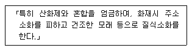
- 마그네슘
- 과염소산나트륨
- 황인
- 과산화수소
(정답률: 63%)
76. 어떤 물질 내에서 반응전파속도가 음속보다 빠르게 진행되고 이로 인해 발생된 충격파가 반응을 일으키고 유지하는 발열반응을 무엇이라 하는가?
- 점화(Ignition)
- 폭연(Deflagration)
- 폭발(Explosion)
- 폭굉(Detonation)
(정답률: 80%)
77. 가연성가스의 조성과 연소하한값이 다음 [표]와 같을 때 혼합가스의 연소하한값은 몇 vol% 인가?
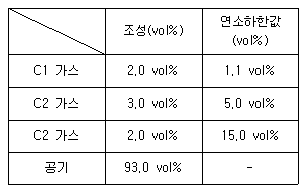
- 1.74
- 2.16
- 2.74
- 3.16
(정답률: 56%)
78. 전기기기의 누전으로 인한 감전재해를 방지하기 위한 조치라고 볼 수 없는 것은?
- 절연열화의 방지
- 누전차단기의 설치
- 냉각 및 부식의 방지
- 충전부와 접촉부와의 이격
(정답률: 56%)
79. 특별고압의 충전전로에서 활선작업을 할 때 유지하여야 하는 접근한계거리는 충전전로의 어느 전압을 기준으로 하여 적용하는가?
- 사용전압
- 표준전압
- 충전전압
- 유효전압
(정답률: 39%)
80. 접지저항이 10Ω 이하이고, 접지선의 굵기는 지름 2.6mm 이상의 연동선을 사용하여야 하는 접지공사는?(오류 신고가 접수된 문제입니다. 반드시 정답과 해설을 확인하시기 바랍니다.)
- 제1종 접지공사
- 제2종 접지공사
- 제3종 접지공사
- 특별 제3종 접지공사
(정답률: 36%)
5과목: 건설안전기술
81. 액상한계(LL)가 32%, 소성한계(PL)가 12%일 경우 소성지수(IP)는 얼마인가?
- 10%
- 20%
- 30%
- 44%
(정답률: 61%)
82. 다음 중 크레인의 방호장치와 거리가 먼 것은?
- 비상정지장치
- 권과방지장치
- 과부하방지장치
- 충격흡수장치
(정답률: 69%)
83. 건축물 신축시 통나무비계를 사용할 수 있는 최대높이는 몇 m 이하인가?
- 8m 이하
- 10m 이하
- 12m 이하
- 14m 이하
(정답률: 52%)
84. 거푸집동바리 등을 조립하는 때 동바리로 사용하는 파이프 서포트에 대하여는 다음 각목애서 정하는 바에 의해 설치 하여야 한다. ( ) 안에 적합한 것은?
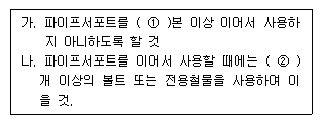
- ① : 1 ② : 2
- ① : 2 ② : 3
- ① : 3 ② : 4
- ① : 4 ② : 5
(정답률: 68%)
85. 다음 중 철골작업을 중지하여야 하는 풍속 기준은?
- 풍속이 초당 10미터 이상
- 풍속이 분당 10미터 이상
- 풍속이 초당 1미터 이상
- 풍속이 분당 1미터 이상
(정답률: 77%)
86. 다음은 비계조립에 관한 사항이다. ( )안에 적합한 것은?
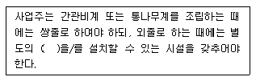
- 안전난간
- 작업발판
- 안전벨트
- 표지판
(정답률: 53%)
87. 근로자의 작업배치 추락위험이 있을 때 비계 조립 등에 의하여 작업발판을 설치해야 하는 높이 기준은?
- 1m 이상
- 2m 이상
- 3m
- 4m 이상
(정답률: 73%)
88. 항타기 또는 항발기의 권상용 와이어로프의 사용금지 규정으로 옳지 않은 것은?
- 와이어의 한 꼬임에서 끊어진 소선의 수가 7% 이상인 것.
- 지름의 감소가 호칭지름의 7%를 초과한 것.
- 꼬임, 꺾임, 비틀림 등이 있는 것.
- 이음매가 있는 것.
(정답률: 61%)
89. 느슨하게 쌓여 있는 모래 지반이 물로 포화되어 있을 때 지진이나 충격을 받으면 일시적으로 전단강도를 잃어버리는 현상은?
- 모관현상
- 보일링현상
- 틱소트로피
- 액상화현상
(정답률: 62%)
90. 철골공사에서 기둥의 건립작업시 앵커볼트의 매립에 있어 요구되는 정밀도에서 기둥중심은 기준선 및 인접 기둥의 중심으로부터 얼마 이상 벗어나지 않아야 하는가?
- 3mm
- 5mm
- 7mm
- 10mm
(정답률: 51%)
91. 화물취급작업 중 화물 적재시 준수해야 하는 사항에 속하지 않는 것은?
- 침하의 우려가 없는 튼튼한 기반 위에 적재할 것.
- 중량의 화물은 건물의 칸막이나 벽에 기대어 적재할 것.
- 불안정할 정도로 높이 쌓아 올리지 말 것.
- 편하중이 생기지 아니하도록 적재할 것.
(정답률: 83%)
92. 항타기 및 항발기를 조립하는 대의 사용전 점검사항이 아닌 것은?
- 과부하장치 및 제동장치의 이상유무
- 권상장치의 브레이크 및 쐐기장치 기능의 이상유무
- 본체의 연결부의 풀림 또는 손상의 유무
- 권상기의 설치상태의 이상유무
(정답률: 38%)
93. 달비계(곤돌라의 달비계는 제외)의 최대 적재하중을 정함에 있어 달기와이어로프 및 달기강선의 안전계수 기준은 얼마인가?
- 5 이상
- 7 이상
- 8 이상
- 10 이상
(정답률: 46%)
94. 콘크리트를 타설할 때 거푸집에 작용하는 콘크리트 측압에 크게 영향을 미치지 않는 것은?
- 콘크리트 타설 속도
- 콘크리트 타설 높이
- 콘크리트 설계기준강도
- 콘크리트 단위용적중량
(정답률: 52%)
95. 다음 중 스크레이퍼의 용도로 가장 거리가 먼 것은?
- 적재
- 운반
- 하역
- 양중
(정답률: 53%)
96. 다음 중 압쇄기에 의한 건물의 파쇄작업순서로 옳은 것은?
- 슬래브 - 기둥 - 보 -벽체
- 기둥 - 슬래브 - 보 -벽체
- 기둥 - 보 - 벽체 - 슬래브
- 슬래브 - 보 -벽체 - 기둥
(정답률: 51%)
97. 가설통로 중 경사로에 설치되는 발판의 폭 및 틈새기준으로 옳은 것은?
- 발판폭 30㎝ 이상, 틈 3㎝ 이하
- 발판폭 40㎝ 이상, 틈 3㎝ 이하
- 발판폭 30㎝ 이상, 틈 4㎝ 이하
- 발판폭 40㎝ 이상, 틈 5㎝ 이하
(정답률: 56%)
98. 다음 중 철골작업시 추락재해를 방지하기 위한 설비가 아닌 것은?
- 안전대 및 구명중
- 트렌치박스
- 안전난간
- 추락방지용 방망
(정답률: 83%)
99. 다음 중 터널식 굴착방법과 거리가 먼 것은?
- TBM공법
- NATM공법
- 쉴드공법
- 어스앵커공법
(정답률: 54%)
100. 유해.위험방지계획서를 작성하여 제출하여야 하는 노동부령이 정하는 규모의 사업에 해당하지 않는 것은?
- 지상 높이가 31미터 이상인 건축물 또는 공작물
- 연면적 3만제곱미터 이상인 건축물
- 깊이 10미터 이상인 굴착공사
- 다목적댐. 발전용댐 및 저수용량 1천만톤 이상의 용수전용댐 등의 건설공사
(정답률: 71%)